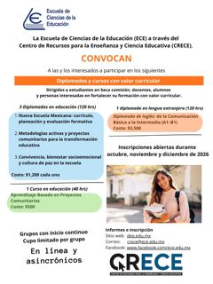

CRECE · Valor curricularAbierta

Ampliar cartelDiplomados y curso con valor curricular
Inglés A1-B1, Nueva Escuela Mexicana, Metodologías activas y Convivencia y cultura de paz (120 horas), más Aprendizaje Basado en Proyectos Comunitarios (40 horas). 100 % en línea.
Oct–Dic2026 · inicio continuo,
cupo limitado
cupo limitado